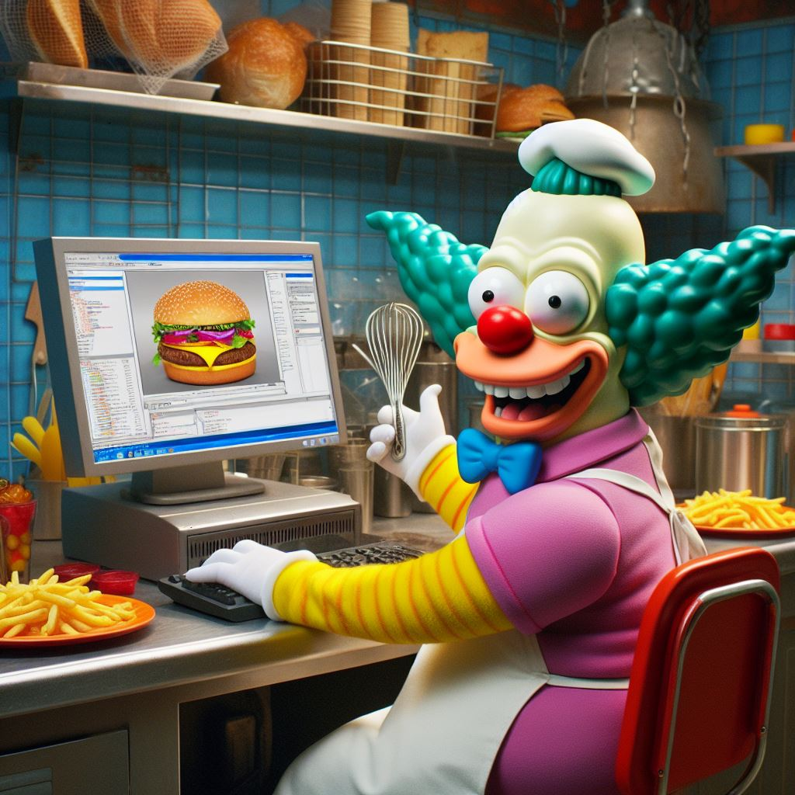
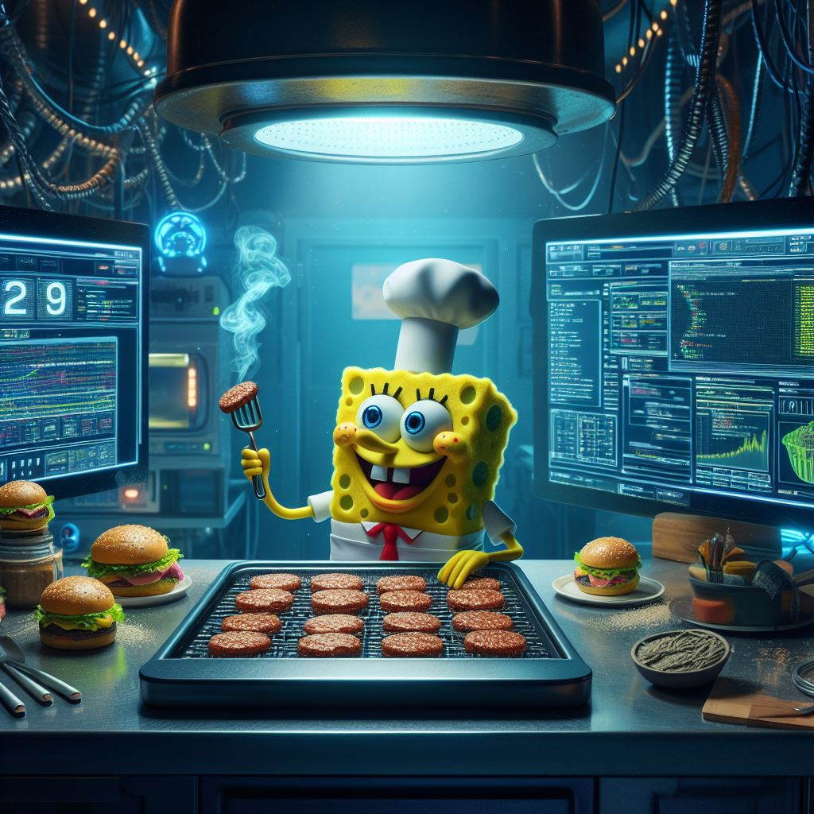

1.Chefkoch Krusty: Der intergalaktische Geschmacksalchimist
Krusty, unser unverwechselbarer intergalaktischer Koch, ist mehr als nur ein Meister der Pfannen und Töpfe – er ist ein wahrer Geschmacksalchimist. Seine kulinarischen Kreationen sind so innovativ, dass sie die Grenzen der Dimensionen sprengen. Krusty zaubert nicht nur Burger auf den Teller, sondern vielmehr interstellare Geschmacksexplosionen. Sein Geheimnis? Ein Hauch von Sternenstaub, eine Prise Quantenwürze und eine Prüfung in Kochkunst, die die Schwerkraft selbst herausfordert. In Krustys Küche wird jeder Bissen zu einer Reise durch die kosmischen Geschmacksnebulae.
2. Chefkoch SpongeBob: Der Zeitreise-Burger-Zauberer
SpongeBob, unser liebenswerter Zeitreise-Burger-Zauberer, macht nicht nur Burger – er erschafft kulinarische Zeitreisen. Seine Spezialität, der "Zeitreise-Doppeldecker", ist mehr als nur ein Burger; er ist ein episches Abenteuer durch Geschmacksepochen. SpongeBob jongliert nicht nur mit Pfannen, sondern auch mit den feinen Linien der Gastronomiegeschichte. Seine Küche ist ein lustiges Laboratorium der Aromen, in dem Vergangenheit, Gegenwart und Zukunft miteinander verschmelzen. Ein Besuch in SpongeBobs Küche ist wie eine Zeitreise ohne Zeitmaschine – nur viel köstlicher!
